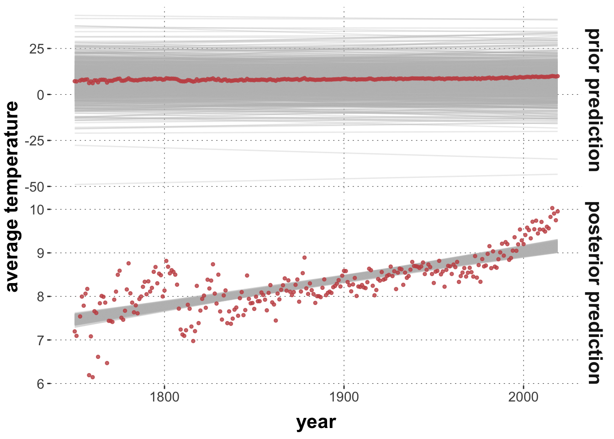
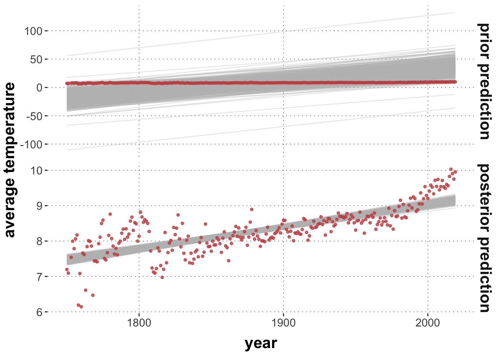
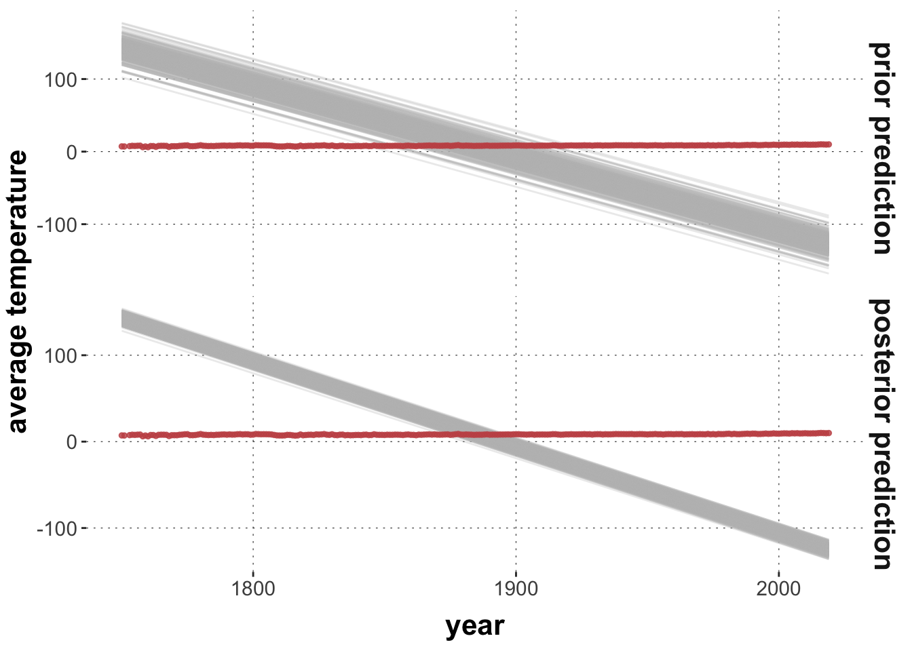

Here is code to load (and if necessary, install) required packages, and to set some global options (for plotting and efficient fitting of Bayesian models).
Reveal code
# install packages from CRAN (unless installed)pckgs_needed <-c("tidyverse","brms","remotes","tidybayes","bridgesampling","shinystan")pckgs_installed <-installed.packages()[,"Package"]pckgs_2_install <- pckgs_needed[!(pckgs_needed %in% pckgs_installed)]if(length(pckgs_2_install)) {install.packages(pckgs_2_install)} # install additional packages from GitHub (unless installed)if (!"aida"%in% pckgs_installed) { remotes::install_github("michael-franke/aida-package")}if (!"faintr"%in% pckgs_installed) { remotes::install_github("michael-franke/faintr")}if (!"cspplot"%in% pckgs_installed) { remotes::install_github("CogSciPrag/cspplot")}# load the required packagesx <-lapply(pckgs_needed, library, character.only =TRUE)library(aida)library(faintr)library(cspplot)# these options help Stan run fasteroptions(mc.cores = parallel::detectCores())# use the CSP-theme for plottingtheme_set(theme_csp())# global color scheme from CSPproject_colors = cspplot::list_colors()[c(1,3,4,5,2,6:14),"hex", drop =TRUE]# setting theme colors globallyscale_colour_discrete <-function(...) {scale_colour_manual(..., values = project_colors)}scale_fill_discrete <-function(...) {scale_fill_manual(..., values = project_colors)}
Reveal code
dolphin <- aida::data_MT
Priors in brms models
Here is the aggregate data and a simple linear regression model we looked at before:
Reveal code
# create aggregate datadolphin_agg <- dolphin |>filter(correct ==1) |>group_by(subject_id) |> dplyr::summarize(AUC =median(AUC, na.rm =TRUE),MAD =median(MAD, na.rm =TRUE)) # run the modelmodel1 =brm( AUC ~ MAD, data = dolphin_agg)
We can inspect the priors used in in a model fit like so:
Reveal code
brms::prior_summary(model1)
prior class coef group resp dpar nlpar lb ub
student_t(3, 14864.2, 32772.3) Intercept
(flat) b
(flat) b MAD
student_t(3, 0, 32772.3) sigma 0
source
default
default
(vectorized)
default
This tells us that the priors for the slope coefficient for the variable MAD was “flat”. Per default, brms uses so-called improper priors, i.e., not specifying any prior at all, so that every parameter value is equally weighted (even if this is not a proper probability distribution).
In contrast, brms /does/ use more specific, in fact rather smart, priors for the intercept and for the standard deviation. These priors are informed by the data. Look:
Reveal code
dolphin_agg |>pull(AUC) |>median()
[1] 14864.25
Reveal code
dolphin_agg |>pull(AUC) |>sd()
[1] 49258.31
We can change the priors used to fit the model with the prior attribute and the brms::prior() function. Here, we set it to a normal (with ridiculously narrow)
Reveal code
model2 <-brm( AUC ~ MAD, data = dolphin_agg,prior = brms::prior(normal(0,10), class ="b"))
The brms::prior() function expects the prior to be specified as a Stan expression. Full documentation for this is in the Stan Functions Reference.
Exercise 1a
Fit a third model model3 as the previous ones, but set the prior for the slope coefficient to a Student’s \(t\) distribution with mean 0, standard deviation 100 and one degree of freedom.
Show solution
model3 <-brm( AUC ~ MAD, data = dolphin_agg,prior = brms::prior(student_t(1,0,100), class ="b"))
Exercise 1b
Compare the mean posteriors for all three main parameters (intercept, slope for MAD and sigma) in all three models. What effect did changing the prior on the slope parameter have for models 2 and 3? Remember that the priors for these models are quite “unreasonable” in the sense that they are far away from the posterior obtained for model 1.
Show solution
extract_info <-function(model_fit, label) { tidybayes::summarise_draws(model_fit) |>mutate(model = label) |>select(model, variable, q5, mean, q95) |>filter(variable %in%c('b_Intercept', 'b_MAD', 'sigma'))}rbind(extract_info(model1, "model 1"),extract_info(model2, "model 2"),extract_info(model3, "model 3")) |>arrange(variable, model)# we see that the Student-t prior in model 3 gives a very similar fit as for model 1;# this is likely due to the heavier tails of the Student-t distribution## we also see that the more restricted model 2 has a much lower mean posterior # for the slope coefficient (because this parameter is "leashed close to zero" by the prior);# instead model 2 compensates with a much higher intercept estimate
The important upshot of this exercise is that since all parameters jointly condition the likelihood function, it can happen that changing the priors for just one parameter will also affect the posterior inferences for other parameters (who have to “go out of they way” to compensate for what the other parameter can or cannot do, so to speak).
This raises the question of how to determine “good priors”. This is a chapter of its own, and a controversial one, and definitely a matter that depends on what you want to do with your model (explore or monkey-around, make serious predictions about the future (e.g., disease spread, market development), or draw theoretical conclusions from data (e.g., which theory of reading-times in garden-path sentences is supported better by some data)). In almost all cases, however, it is good advice to remember this: priors should be evaluated in the context of the (prior) predictions they entail. That’s the topic we attend to in the next section.
Before going there, here is how we can obtain samples from the prior of a model. Sampling from the prior only works if priors are not the improper (flat) default priors. Firstly, we can use the option sample_prior = "only" to obtain only samples from the prior. (NB: we still need to supply the data because it is used for the setting up the model; e.g., specifying the prior for the intercept.)
Reveal code
model2_priorOnly <-brm( AUC ~ MAD, data = dolphin_agg,prior = brms::prior(normal(0,10), class ="b"),sample_prior ='only')model2_priorOnly |> tidybayes::summarise_draws() |>select(1:6)
It is also possible to obtain a posterior fit /and/ prior samples at the same time, but that is a bit more fickle, as the prior samples will have other names, and (AFAICS) other functions are required than for posterior samples, entailing other formatting of the returned samples.
Reveal code
model2_priorAdded <-brm( AUC ~ MAD, data = dolphin_agg,prior = brms::prior(normal(0,10), class ="b"),sample_prior =TRUE)# posterior samplesmodel2_priorAdded |> tidybayes::summarise_draws() |>select(1:6)
Intercept b sigma
Min. :-765380 Min. :-33.81651 Min. : 2.4
1st Qu.: -10871 1st Qu.: -6.69644 1st Qu.: 11259.5
Median : 13588 Median : -0.07971 Median : 25500.6
Mean : 13332 Mean : 0.12071 Mean : 36852.9
3rd Qu.: 39064 3rd Qu.: 7.01555 3rd Qu.: 46407.1
Max. :1075796 Max. : 37.54828 Max. :947494.9
A third possibility is to use stats::update() to draw additional prior samples from an already fitted object, like so:
Reveal code
# this fit only contains priors but keeps them with the same names and structure# as the posterior samples in `model2`model2_priorUpdate <- stats::update(model2, sample_prior ="only")model2_priorUpdate |> tidybayes::summarise_draws() |>select(1:6)
Here is an example for how we can obtain draws from the posterior predictive distribution using tidybayes::predicted_draws. We are using the fit of a linear model to the (scaled) average world temperature for the year 2025 to 2024.
Reveal code
plot_predictPriPost <-function(prior_spec, ndraws =1000) {# get the posterior fit fit <-brm( avg_temp ~ year,prior = prior_spec,data = aida::data_WorldTemp,silent =TRUE,refresh =0 )# retrieve prior samples from the posterior fit fit_prior_only <-update( fit,silent =TRUE,refresh =0,sample_prior ="only" ) get_predictions <-function(fit_object, type ="prior prediction") { tidybayes::add_linpred_draws( fit_object, newdata =tibble(year = aida::data_WorldTemp$year),ndraws = ndraws,value ='avg_tmp' ) |>ungroup() |>select(year, .draw, avg_tmp) |>mutate(type = type) }get_predictions(fit, "posterior prediction") |>rbind(get_predictions(fit_prior_only, "prior prediction")) |>mutate(type =factor(type, levels =c("prior prediction", "posterior prediction"))) |>ggplot() +facet_grid(type ~ ., scales ="free") +geom_line(aes(x = year, y = avg_tmp, group = .draw), color ="gray", alpha =0.3) +geom_point(data = aida::data_WorldTemp, aes(x = year, y = avg_temp), color = project_colors[2], size =1, alpha =0.8) +ylab("average temperature")}prior_baseline <-c(prior("normal(0, 0.02)", class ="b"),prior("student_t(3, 8, 5)", class ="Intercept"))prior_opinionated <-c(prior("normal(0.2, 0.05)", class ="b"),prior("student_t(3, 8, 5)", class ="Intercept"))prior_crazy <-c(prior("normal(-1, 0.005)", class ="b"),prior("student_t(3, 8, 5)", class ="Intercept"))plot_predictPriPost(prior_baseline)

Reveal code
plot_predictPriPost(prior_opinionated)

Reveal code
plot_predictPriPost(prior_crazy)

Exercise 2
Play around with different prior specifications, and inspect the resulting prior and posterior predictions.
Let’s have a closer look at prior and posterior predictives, and the functions that we can use to explore them. Here, we fit a regression model with the “crazy priors” from above, obtaining both posterior and prior samples for it.
# plot temperature datadolphin_agg |>ggplot(aes(x = MAD, y = AUC)) +geom_point(color = project_colors[2])
Exercise 3a
Obtain a model fit for AUC ~ MAD with a prior for the slope coefficient as a Student-t distribution with 1 degree of freedom, mean 0 and standard deviation 500.
Show solution
fit_dolphin_agg <-brm( AUC ~ MAD, data = dolphin_agg,prior =prior(student_t(1,0,500), class ="b") )
Here is how we can extract and plot three samples from the posterior predictive distribution. So, these are three “fake” data sets of the same size and for the same MAD values as in the original data.